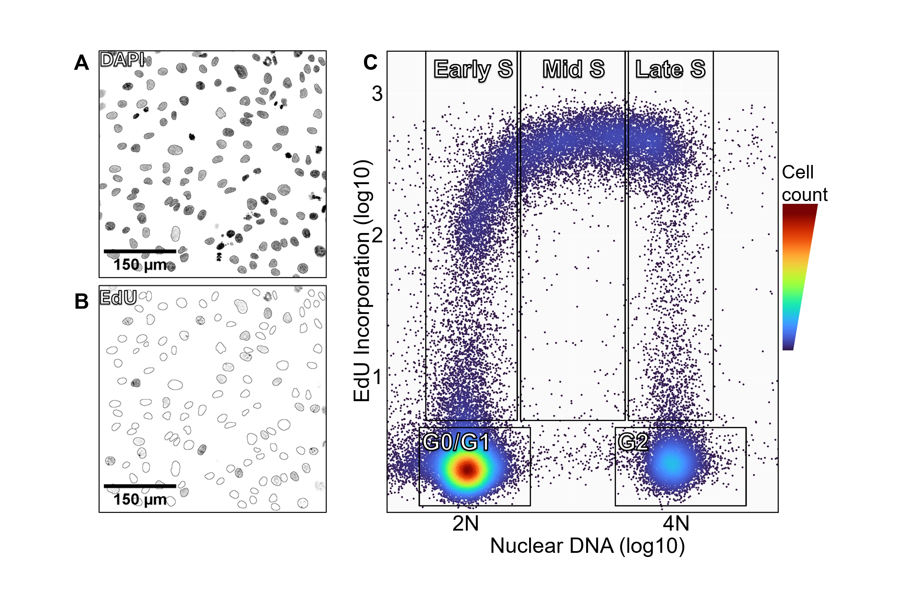

About Me
I am a molecular biologist with 4 years of experience processing, analyzing, and visualizing large datasets from high-content imaging. I am proficient in Python and R, with experience in SQL, Power BI, and HTML. I have a strong background in statistical analysis, data visualization, and automation of workflows to streamline research processes.
My PhD research has focused on extracting high-dimensional datasets from microscopic images to study DNA replication and cell cycle dynamics in the cancer context. I am passionate about solving challenging problems through data-driven approaches and effectively communicating results.
Outside of work, I enjoy learning about advancements in data science, hiking in Queensland's national parks and spending time with family.
Educational Qualifications
Thesis submission: Jun 2025
Graduated: Jun 2020
Quantitative Image Based Cytometry
I developed an automated Python pipeline that measures the characteristics of individual cells within a large asynchronously cycling population. The pipeline sorts and preprocesses multi-channel microscopic images then segments cells and measures characteristics such as protein expression and DNA replication stress across the cell cycle, exporting the results as a CSV file.
